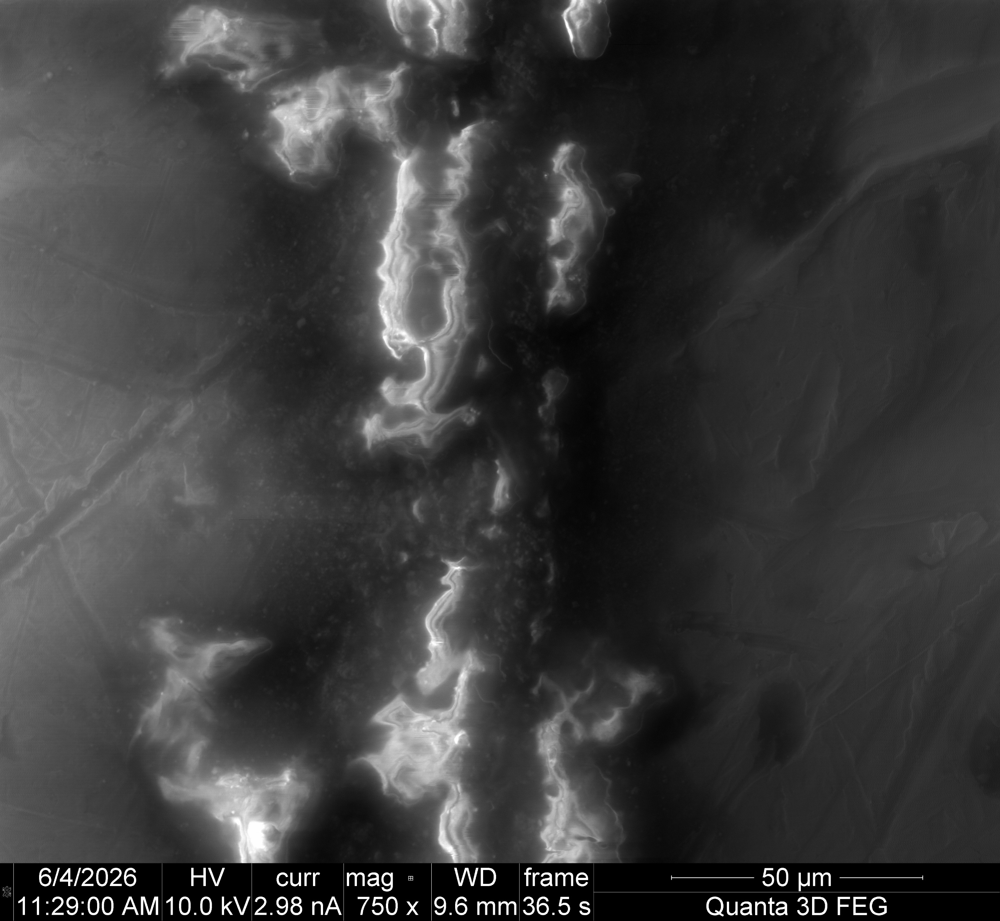
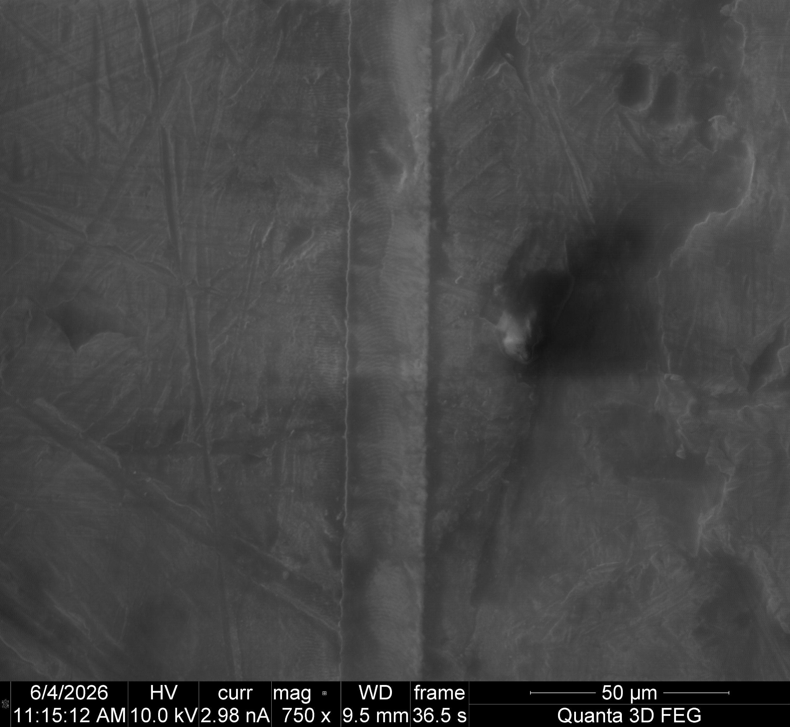

OSU · MEENA Group · Research
Designing a tungsten specimen-preparation system
Objective
I’m developing a laser preparation method for tungsten specimens intended for three-point bending. The goal is to produce a controlled notch for subsequent fracture testing.
My contribution
I designed and built the optical setup, using wave-plate and polarizing-beam-splitter attenuation, two alignment mirrors, and a focusing lens. I then carried out preliminary ablation trials on iron and examined selected tracks using SEM and EDS.
Process development and characterization
I tested scan speeds from 0.1 to 20 mm/s and compared single and repeated passes. I documented selected conditions with SEM to examine how the scan strategy and the specimen surface affected the laser tracks.


The images show different scan conditions. They provide a qualitative comparison, with speed and pass count both changing.
Early findings and current status
My preliminary observations favored repeated passes at higher scan speeds over one much slower pass. I also identified surface defects and small variations in the motorized stage’s path as factors to address in later trials, with cleaning and polishing as useful next steps.
The optical setup and initial process trials are complete. Further work will establish notch geometry and material condition in tungsten, followed by bending tests to evaluate fracture initiation.
Top Skills Utilized
Optical alignment
SEM/EDS
Experimental design
Other Projects
 FLiNaK corrosion of LPBF 316LInternships
FLiNaK corrosion of LPBF 316LInternships Stable crack propagation in nuclear graphiteResearch
Stable crack propagation in nuclear graphiteResearch